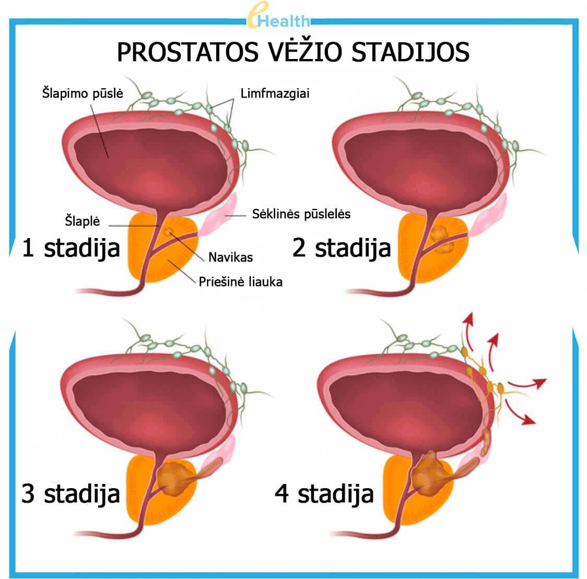
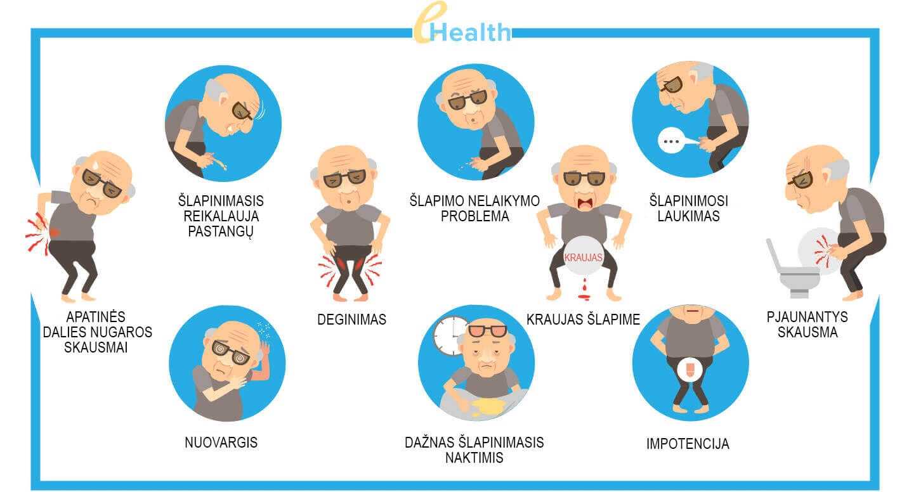
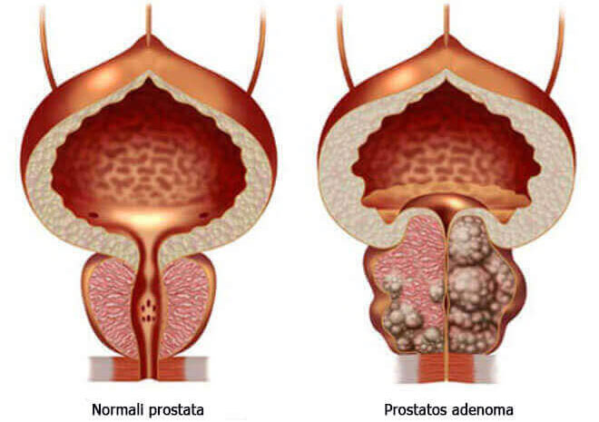
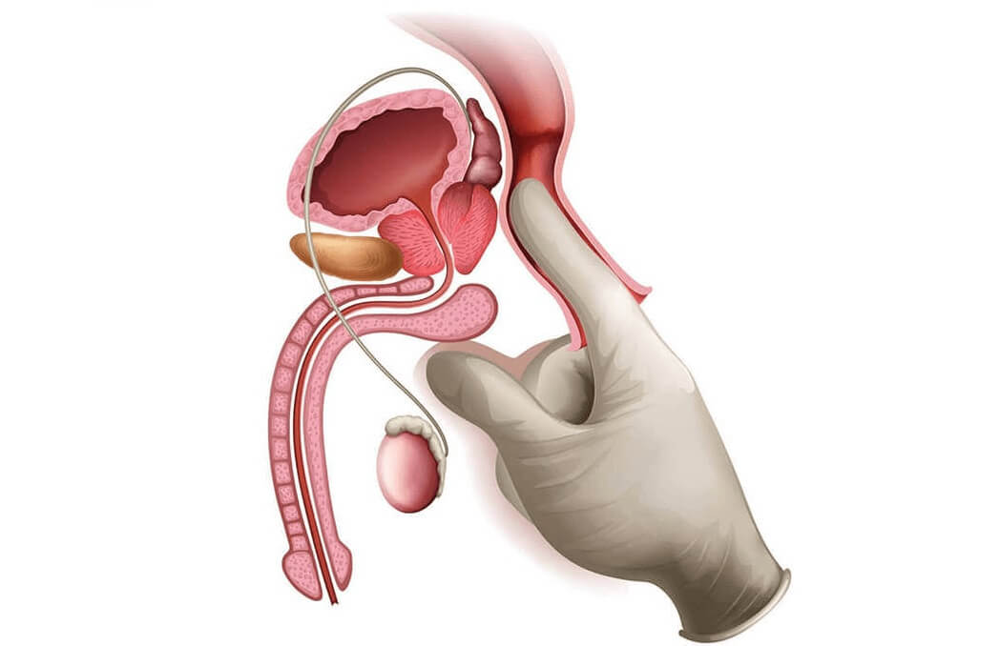
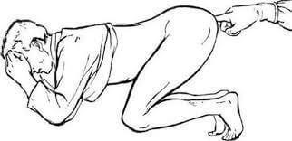

IZRAELYJE vyrai nuo prostatito gydomi per
4 savaites, vieną kartą gyvenime, kartą ir visiems laikams. (metodas
aprašytas žemiau)
Tuo tarpu Lietuvoje: godūs gydytojai,
susitarę su vaistinėmis, slepia veiksmingą vaistą, kurį dabar galima įsigyti su 50%
nuolaida, o kasmet jie „melžia pinigus“ iš vyrų, paskirdami brangius vaistus ir labai
brangias procedūras! (skaitykite žemiau esantį straipsnį, kur rasite informacijos apie
tai, kur įsigyti vaistą pagal lengvatinę programą).
Prostatitas yra paplitusi liga tarp vyresnių nei 60 metų vyrų, o gydytojai pastebi nemalonią tendenciją
- liga „jaunėja“. Vyrai turi „problemų“ būdami 45, 55 ir net 40 metų ir vis dažniau kreipiasi į
gydytojus.

Gydytojai paaiškina ligos populiarumą jos priežastimis. Bet kuris vyras, kuris:
veda sėslų gyvenimo būdą,
neturi reguliaraus lytinio gyvenimo,
turi žalingų įpročių,
sirgo infekcinėmis ligomis,
turi paveldėtą polinkį,
patyrė stresą, ligą ar hipotermiją,
greičiausiai turės prostatos problemų. Kuo daugiau lemiančių veiksnių, tuo greičiau. Kažkas būdamas 45
metų, kitas - 65, tai tik laiko klausimas.
Prostatito simptomai - pasitikrink pats:

2019
m. Urologijos katedra paskelbė bauginančią statistiką:
daugiau nei 55% vyresnių nei 60 metų vyrų yra susidūrę su prostatos liaukos problemomis vienokia
ar kitokia forma. Prostatitą nustatyti gana paprasta net neturint medicininio išsilavinimo, kadangi
dauguma jo simptomų yra specifiniai:
Tempiantys arba pjaunantys skausmai:
apatinėje pilvo dalyje, kapšelyje;
tarpvietėje ar varpoje;
Šlapinimosi sutrikimai:
dažnas šlapinimasis, deginimo pojūtis šlaplėje;
„nevisiškai tuščios šlapimo pūslės“ jausmas
sunku šlapintis (silpna šlapinimosi srovė);
Lytinės funkcijos sutrikimai:
sumažėjęs lytinis potraukis;
erekcijos trukmės ir kokybės pablogėjimas;
Ejakuliacijos sutrikimas:
priešlaikinė ejakuliacija ar problemos siekiat jos;
silpna ejakuliacija.
Taip pat padidėjęs nuovargis ir erzlumas.
Net nepaisant akivaizdaus gyvenimo kokybės blogėjimo, daugelis vyrų daug metų gyvena su prostatitu,
nežinodami apie negrįžtamus padarinius, kuriuos gali sukelti, atrodytų, nedidelis diskomfortas.

Negydomas prostatitas visada sukelia prostatos adenomą („vyrišką
mirtį“).
Iš dalies juos galima suprasti - prostatos diagnostika bet kuriam vyrui, suprantančiam šį procesą,
sukelia rimtą nemalonumą ir gėdą. Be to, daugeliu atvejų, išgirdus „prostatito“ diagnozę, vizitai pas
urologą tampa kasmetiniu sunkiu darbu. Gydytojai palengvina pačius ūmiausius simptomus vaistais, kuriuos
„rekomenduoja vaistininkai“, tačiau kiekvienos hipotermijos ar režimo nesilaikymo atveju prostatitas
„vėl pasirodo“.
Kaip prostatitas gydomas pas mus (ir kaip jo NEREIKIA gydyti)
Liūdniausia, kad negalėsite atsikratyti prostatito, net jei to tikrai norite.
Standartinė prostatito gydymo procedūra:

Vyras kreipiasi į kliniką.
Privačią arba valstybinę - nesvarbu, nes galų gale vis tiek turėsite sumokėti.
Gydytojas pats atlieka tyrimą ir paskiria krūvą kitų tyrimų. Kai kurie net nereikalingi, bet dėl
viso pikto, gal žmogus serga kokia nors kita liga, kuria galima išgydyti. Be to, už pačius tyrimus
teks sumokėti.
Po apžiūros gydytojas diagnozuoja „prostatitą“ ir skiria „rekomenduojamus vaistus“. Vaistai
paskiriami tie, kurie skirti palengvinti ūminius ligos simptomus, bet ne gydyti lėtinį prostatitą.
Ir, žinoma, urologas rekomenduoja tų farmacijos įmonių vaistus, kurių medicinos atstovai jam
sumokėjo daugiausia pinigų. Apie šiuos vaistus visi yra girdėję.
Be „rekomenduojamų“ vaistų simptomams palengvinti, gydytojai visada skiria rektalinį prostatos masažą
ar panašaus poveikio aparatinį gydymą. Tai žeminanti ir labai nemaloni procedūra - masažas atliekamas
pirštu per vyro išangę. Vidutiniškai turi būti atlikta 10–14 masažo seansų. Ir žinoma, jūs turite
mokėti už kiekvieną seansą.
Europoje šio masažo nebeatlieka jau daugiau nei 20 metų, nes šiuolaikiniai vaistai gali išgydyti
prostatitą be jo!

18+
Be pagrindinio gydymo, gydytojai dažnai paskiria vaistus, skirtus pagerinti lytinę funkciją,
pagerinti spermos kokybę, „atstatyti organizmą“ po antibiotikų ir kt.
Todėl vienkartinis prostatito gydymas Lietuvoje vyrui kainuos labai brangiai, urologai tikrai sudaro
terapijos kursą, pirmiausia remdamiesi paciento finansinėmis galimybėmis. Tokiu atveju bus
pašalinti tik pagrindiniai ūminiai ligos simptomai. Lėtinis prostatitas išliks ir vėl pasireikš, kai tik
vyras peršals arba nustos laikytis gydytojo nurodytos dietos.
Todėl kasmet reikės mokėti atitinkamas sumas — būtent šiuo pagrindu yra kuriamas bendras urologų
ir farmacijos verslas.
Kaip žydų vyrai gydo prostatitą (kaip jis TURI BŪTI gydomas)
Izraelyje norint išgydyti prostatitą net nereikia kreiptis į gydytoją. Pasireiškus pirmiems
simptomams, pakanka nueiti į vaistinę ir nusipirkti dešimtmečių patikrinto vaisto, kuris nepasiekia
Lietuvos rinkos tik todėl, kad jis padeda visiškai išgydyti lėtinį prostatitą (vieną kartą gyvenime ir
visiems laikams)! Natūralu, kad toks vaistas nėra naudingas Lietuvos vaistinių mafijai - juk daug
naudingiau „įtraukti“ žmogų į kasmetinį skausmo simptomų palengvinimą, nei išgydyti ligą visiškai
nebrangiu ir visiems prieinamu vaistu.
Priešingai nei mūsų šalyje, Izraelyje yra labai populiarus draudimas. Draudimo kompanijos nėra
suinteresuotos, kad kas antras vyras lankytųsi pas gydytojus du kartus per metus - juk už visa tai turi
mokėti draudimo įmonės, o gydytojų atlyginimai ten yra gana dideli. Priešingai, jie suinteresuoti, kad
gydymas būtų kuo efektyvesnis ir greitesnis. Kartą ir visiems laikams.
Izraelyje draudimo įmonių interesai nugalėjo vaistinių mafiją ir, paprastų vyrų laimei, veiksminga
priemonė prostatito gydymui visada parduodama ir prieinama...
Ar situacija Lietuvoje pasikeis į gerąją pusę?
Deja, nereikia tikėtis teigiamų pokyčių Lietuvos vaistinių ir gydytojų darbo srityje - juk farmacijos
verslas siekia milijardų dolerių, o aukščiausių pareigų žmonės gauna iš jo pajamų.
Tačiau šiandien visai nereikia vaistų ieškoti vaistinėse. Juos galima užsisakyti internetu užėjus į
specialias svetaines. Visai neseniai mūsų šalyje pasirodė vienas efektyviausių vaistų Izraelyje -
. Beveik
iškart
po pasirodymo rinkoje jis susilaukė didžiulės sėkmės.
Palyginkime, kaip
skiriasi nuo kito vaistinių siūlomo
ir populiaraus
Lietuvoje
vaisto, skirto prostatito gydymui:
º Dažnai vartojant gali atsirasti priešinės liaukos piktybiniai pokyčiai.
º Mažina potenciją º Sukelia žarnyno problemų º Slopina imunitetą, skatina alergijų
vystymąsi º Sukelia stiprų skrandžio skausmą
Veikimo principas:
Specialiai parinkta natūralių ingredientų sudėtis visapusiškai veikia
prostatą, suteikia priešuždegiminį ir stiprinamąjį poveikį. Pašalina visą patogeninę florą iš
prostatos, pagerina prostatos struktūrą ir funkcijas. Vaistas rekomenduojamas sergant lėtiniu,
staziniu ir bakteriniu prostatitu.
Laikinai malšina prostatos skausmą, užmaskuodamas ligos eigą. Tačiau
pasibaigus vaisto poveikiui, liga vėl pasireiškia.
Sudėtis:
Natūralūs augaliniai ingredientai ir vitaminai
Kalcio stearato monohidratas, krospovidonas, trietilo citratas, titano
dioksidas ir kita chemija
Garantijos:
Gamintojo kokybės garantija
Garantijų nėra
Mūsų šalyje gamintojas visgi sugebėjo padaryti šį vaistą prieinamą visiems! Po ilgų derybų „su
reikiamais žmonėmis“ pagaliau pavyko pradėti lengvatinę programą „Vyrų sveikata“. Programos tikslas:
suteikti kiekvienam vyrui galimybę išgydyti prostatitą, neleidžiant jam sukelti vėžį ar mirtį,
nepriklausomai nuo jo finansinės būklės. Pagal lengvatinę programą vaistui
suteikiama 50% nuolaida.
galite įsigyti gamintojo svetainėje, spustelėję žemiau
esantį mygtuką.
Prieš šį vaistą jau pradėta plataus masto kampanija, kurią inicijavo didžiausi šalies vaistinių tinklai.
Gali būti, kad jis labai greitai išnyks iš rinkos. Visiems vyrams rekomenduojame užsisakyti
, kol
tai dar įmanoma padaryti. Iki
(imtinai) vaistas bus parduodamas pagal lengvatinę programą.
Komentarai
Tomas K., Viekšniai
Ačiū už įdomų straipsnį! Lietuvoje viskas korumpuota aukščiausiu lygiu, gerai, kad internetas vis
dar prieinamas. Užsisakiau kol galioja nuolaida. Reikia gydytis.
Martynas S., Vilnius
Aš visiškai pritariu! - nuostabus dalykas! Pirkau
Juodkalnijoje, kai
atostogavau ten
praėjusią vasarą, tik labai brangiai kainavo. Prieš tai maždaug 10 metų kentėjau nuo lėtinio
prostatito. Bandžiau gydyti, tačiau, kaip pasakyta aukščiau, gydymas suteikė tik laikiną poveikį.
Kai tik pradėjau vartoti , prostatitas beveik išnyko. Ir daugiau
nei šešis
mėnesius nebuvo
pasireiškęs. Anksčiau apie tokią laimę buvo galima tik pasvajoti. Aš rekomenduoju
visiems
vyrams. Jis padės! Be to, šiuo metu galioja nuolaida.
Mantas G., Jonava
Užsakiau. Tikrai įsigijau su nuolaida.))) Maloniai nustebinęs.
Ačiū!
Dominykas M., Kaunas
Taip pat turiu patirties gydant prostatitą šiuo vaistu. Aš nusipirkau jį nurodytoje svetainėje,
tik tada akcijų nebuvo, ir kaina buvo daug aukštesnė. Bet negaila, svarbiausia yra tas, kad jis
padėjo atsikratyti prostatito maždaug per 4 savaites be jokio masažo.
Mindaugas A., Kybartai
Užsisakiau! Labai ačiū!
Evaldas N., Klaipėda
Kartą žiūrėjau laidą per televiziją apie farmacijos verslą Lietuvoje. Kažkas panašaus į
žurnalistinį tyrimą. Jie taip pat kalbėjo apie šį vaistą. Kad kol kas jis yra, bet netrukus jo
gali ir nebūti rinkoje. Reikia pirkti, kol parduodamas.
Antanas G., Plungė
Nuo 45 metų sergu lėtiniu prostatitu. Dabar man 61 metai. Per šį laiką aš jį gydžiau du kartus,
kai buvo sunkių paūmėjimų. Paskutinį kartą gydytojai vos išgelbėjo. Jie sakė kad jei dar
palaukčiau, prostatitas būtų virtęs prostatos vėžiu. Todėl visiems, sergantiems prostatitu,
patariu kuo anksčiau jo atsikratyti. Tai labai pavojinga liga.
Virginija Š., Vilnius
Reikia vyrui užsakyti. Ačiū!
Linas N., Šiauliai
Juokinga, bet tikrai gavau su nuolaida.
Eimantas B., Šeduva
- geriausias vaistas iš visų!
Sutinku su
straipsnio
autoriumi ir visais komentatoriais, kuriuose jį gyrė. Aš jį vartojau maždaug prieš 3 mėnesius.
Prostatitas visiškai išnyko! Prieš tai sirgau juo keleri metai, buvo bloga erekcija, ir aš greitai
baigdavau. Dabar viskas tvarkoje
Lukas M., Mažeikiai
+500. Puikus vaistas
Remigijus, Utena
Apie skaičiau daugiau svetainėje. Įspūdinga! Užsakiau. Jie
pažadėjo, kad per
5 dienas
galėsiu jį atsiimti pašte arba pristatys kurjeriu, viskas anoniminėje pakuotėje. Patogiai.
Darius P., Vilnius
Vyrai, tai tikrai kažkas įspūdingo! Gavau praėjusią savaitę. Dabar nėra nė vieno prostatito
simptomo. Skausmai dingo, aš nustojau dažnai bėgioti į tualetą, skausmas dingo šlapinimosi metu.
Be to, potencija žymiai pagerėjo, o sekso trukmė padidėjo. Aš jaučiuosi puikiai. Tikrai verta
užsisakyti, juk nuolaidą dabar. Bet už jį ir be nuolaidos sumokėčiau. Produkto efektyvumas
maloniai nustebino.
Andrius D., Druskininkai
Ačiū!
Ašeris Kaufmanas, Izraelio Paulio Erlicho Biomedicininių preparatų instituto vadovas,
Urologijos katedros profesorius
Neinvazinį prostatito gydymo metodą naudojant natūralią priemonę, susidedančią iš natūralių
ingredientų, atrado Izraelio urologas Ašeris Kaufmanas, atlikdamas tyrimus Izraelio Paulio Erlicho
Biomedicininių preparatų institute.
Ašeris Kaufmanas buvo pirmas žmogus, kuris kliniškai įrodė savo metodo 98% efektyvumą ir savo
praktikoje (gydant ūminį ir lėtinį prostatitą) pradėjo taikyti vaistą .
Nuo
metų - tampa medicinos
standartu ir
yra
rekomenduojamas medicinos praktikai Izraelyje ir vėliau daugelyje kitų šalių.
Vienintelis vaistas, kurio veiksmingumas ir saugumas pripažįstas Izraelio mokslo bendruomenės,
Lietuvoje parduodamas su prekės ženklu .
GALITE SPĖTI ĮSIGYTI SU NUOLAIDA. PALIKITE PARAIŠKĄ, JEIGU NORITE DALYVAUTI
PROGRAMOJE

Tomas K., Viekšniai
Ačiū už įdomų straipsnį! Lietuvoje viskas korumpuota aukščiausiu lygiu, gerai, kad internetas vis dar prieinamas. Užsisakiau kol galioja nuolaida. Reikia gydytis.